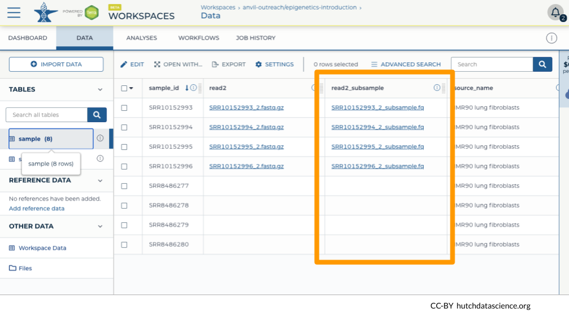

Chapter 4 Run the Workflow
4.1 Start the Run
Once you have saved the inputs and outputs, click on RUN ANALYSIS.

4.2 Monitor the Run
Navigate to the JOB HISTORY tab. You can see your most recent submissions in table form. Click on the most recent submission. Notice how each sample gets its own job. This keeps the whole process speedy!

4.3 Inspect the Run Results
You should see the status change to “Succeeded” if everything completed correctly.

After 24 hours, you can also see the costs associated with each run under “Run Cost”.
4.4 Inspecting Other Run Files
It can be helpful to look at intermediate files on Google Cloud Platform, especially if runs did not complete successfully. You can view these files by clicking on the folder icon for “Execution directory”.

For each run, you can see a number of associated files, including the output .fq files and log files.

Click on stdout and/or stderr and “DOWNLOAD” to view the terminal output.

Here is what your output in stdout might look like.

4.5 Confirming Results in the DATA tab
We can see that the subsample files have been linked in the DATA table “sample”.

In our example, we have a mixture of single-end and paired-end reads, so only the paired-end samples get a second file.

You should now be able to use the subset files for downstream applications!